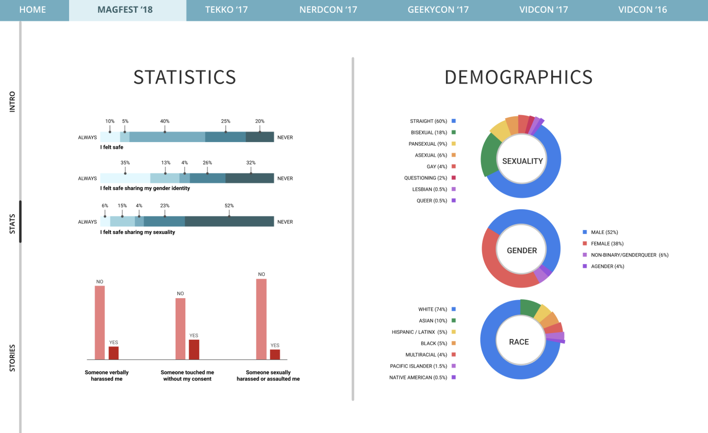
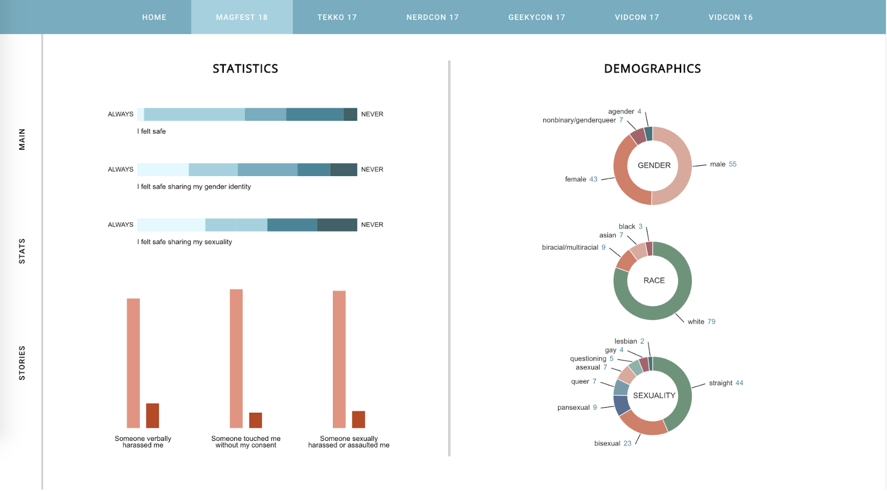

Uplift is a non-profit dedicated to combating sexual abuse in online communities through education and advocacy. They work to ensure that these flourishing communities are safe for the millions of people who connect through them, both online and at in-person events. Uplift is commissioned by large conventions (such as Magfest) to set up survey stations and poll attendees in order to understand current flaws in convention organization and execution, specifically regarding to incidents involving sexism, racism, and harassment. I built a data-visualization tool that ingested the hundreds of survery responses and outputted the results in a graph on a web-app.
💻 Coding — Java, Python, JavaScript, React, HTML/CSS, Go, SQL
🛠 Software — Google Cloud Services, Github, D3


We were originally going to use an script to scrape survey data from Google Sheets automatically, and eventually extend this into an API. After looking through data, we realized that the surveys all had different questions and had been asked differently throughout the years. Thus, we pivoted to using JSON files instead of relying on scripts (that may break).